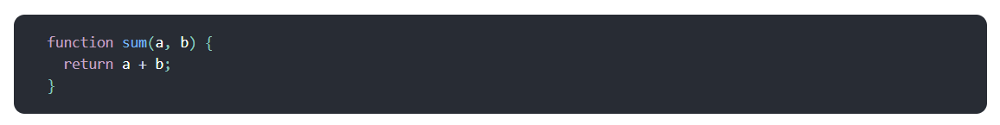

React JS
Fundamentals
What is React JS ?
React is a JavaScript library for building user interfaces.It allows you to assemble a complex UI from small, isolated pieces of code called “components”.
React has been designed from the start for gradual adoption, and you can use as little or as much React as you need.
Initially, React was intended to create websites, but later the React Native platform appeared, which was already intended for mobile devices.
How is start?
Create new React-app
Create React App is a comfortable environment for learning React, and is the best way to start building a new single-page application in React.
It sets up your development environment so that you can use the latest JavaScript features, provides a nice developer experience, and optimizes your app for production.To create a project, run in you terminal:
Create-react-app project structure and start template
Project structure
Let's see what the create-react-app command created for us and how it looks now in the browser
Now look at the file index.js
React-component App.js
What our application looks like in a browser now
It is called JSX, and it is a syntax extension to JavaScript. We recommend using it with React to describe what the UI should look like. JSX may remind you of a template language, but it comes with the full power of JavaScript.
In the example below, we declare a variable called name and then use it inside JSX by wrapping it in curly braces:
You can put any valid JavaScript expression inside the curly braces in JSX. For example, 2 + 2, user.firstName, or formatName(user) are all valid JavaScript expressions.
JSX is an Expression Too
After compilation, JSX expressions become regular JavaScript
function calls and evaluate to JavaScript objects.
This means that you can use JSX inside of if statements and for
loops, assign it to variables, accept it as arguments, and return
it from functions:
Specifying Attributes with JSX
You may use quotes to specify string literals as attributes:
You may also use curly braces to embed a JavaScript expression in an attribute:
Don’t put quotes around curly braces when embedding a JavaScript expression in an attribute. You should either use quotes (for string values) or curly braces (for expressions), but not both in the same attribute.
Specifying Children with JSX
If a tag is empty, you may close it immediately with />, like XML:
JSX tags may contain children:
Components let you split the UI into independent, reusable pieces, and think about each piece in isolation.
Function and Class Components
The simplest way to define a component is to write a JavaScript function:
This function is a valid React component because it accepts a single “props” (which stands for properties) object argument with data and returns a React element. We call such components “function components” because they are literally JavaScript functions.
You can also use an ES6 class to define a component:
The above two components are equivalent from React’s point of view.
Function and Class components both have some additional features that we will discuss in the next sections.
Rendering a Component
Previously, we only encountered React elements that represent DOM tags:
However, elements can also represent user-defined components:
When React sees an element representing a user-defined component, it passes JSX attributes and children to this component as a single object. We call this object “props”. For example, this code renders “Hello, Sara” on the page:
Props are Read-Only
Whether you declare a component as a function or a class, it must never modify its own props. Consider this sum function:
Such functions are called “pure” because they do not attempt to change their inputs, and always return the same result for the same inputs.
React is pretty flexible but it has a single strict rule: All React components must act like pure functions with respect to their props.
State and Lifecycle
Consider the ticking clock example . In Rendering Elements, we have only learned one way to update the UI. We call ReactDOM.render() to change the rendered output:
In this section, we will learn how to make the Clock component truly reusable and encapsulated. It will set up its own timer and update itself every second.
We can start by encapsulating how the clock looks:
However, it misses a crucial requirement: the fact that the Clock sets up a timer and updates the UI every second should be an implementation detail of the Clock.
Ideally we want to write this once and have the Clock update itself:
To implement this, we need to add “state” to the Clock component.
State is similar to props, but it is private and fully controlled by the component.
Converting a Function to a Class
You can convert a function component like Clock to a class in five steps:- Create an ES6 class, with the same name, that extends React.Component.
- Add a single empty method to it called render().
- Move the body of the function into the render() method.
- Replace props with this.props in the render() body.
- Delete the remaining empty function declaration.
Adding Local State to a Class
We will move the date from props to state in three steps:
- Replace this.props.date with this.state.date in the render() method:
2.Add a class constructor that assigns the initial this.state:
Note how we pass props to the base constructor: Class components should always call the base constructor with props.3. Remove the date prop from the
We will later add the timer code back to the component itself. The result looks like this:
Adding Lifecycle Methods to a Class
In applications with many components, it’s very important to free up resources taken by the components when they are destroyed.
We want to set up a timer whenever the Clock is rendered to the DOM for the first time. This is called “mounting” in React.
We also want to clear that timer whenever the DOM produced by the Clock is removed. This is called “unmounting” in React.
We can declare special methods on the component class to run some code when a component mounts and unmounts:
These methods are called “lifecycle methods”.
The componentDidMount() method runs after the component output has been rendered to the DOM. This is a good place to set up a timer:
Note how we save the timer ID right on this (this.timerID).
While this.props is set up by React itself and this.state has a
special meaning, you are free to add additional fields to the
class manually if you need to store something that doesn’t
participate in the data flow (like a timer ID).
We will tear down the timer in the componentWillUnmount()
lifecycle method:
Finally, we will implement a method called tick() that the Clock
component will run every second.
It will use this.setState() to schedule updates to the component
local state:
Now the clock ticks every second.
Let’s quickly recap what’s going on and the order in which the
methods are called:
-
When
is passed to ReactDOM.render(), React calls the constructor of the Clock component. Since Clock needs to display the current time, it initializes this.state with an object including the current time. We will later update this state. - React then calls the Clock component’s render() method. This is how React learns what should be displayed on the screen. React then updates the DOM to match the Clock’s render output.
- When the Clock output is inserted in the DOM, React calls the componentDidMount() lifecycle method. Inside it, the Clock component asks the browser to set up a timer to call the component’s tick() method once a second.
- Every second the browser calls the tick() method. Inside it, the Clock component schedules a UI update by calling setState() with an object containing the current time. Thanks to the setState() call, React knows the state has changed, and calls the render() method again to learn what should be on the screen. This time, this.state.date in the render() method will be different, and so the render output will include the updated time. React updates the DOM accordingly.
- If the Clock component is ever removed from the DOM, React calls the componentWillUnmount() lifecycle method so the timer is stopped.